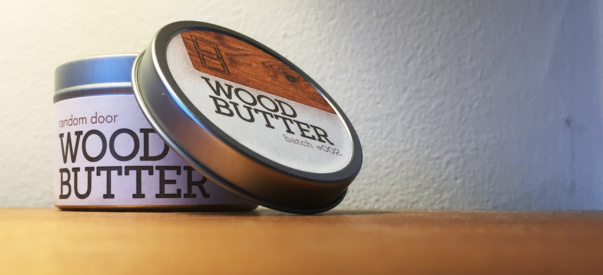
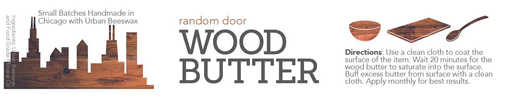
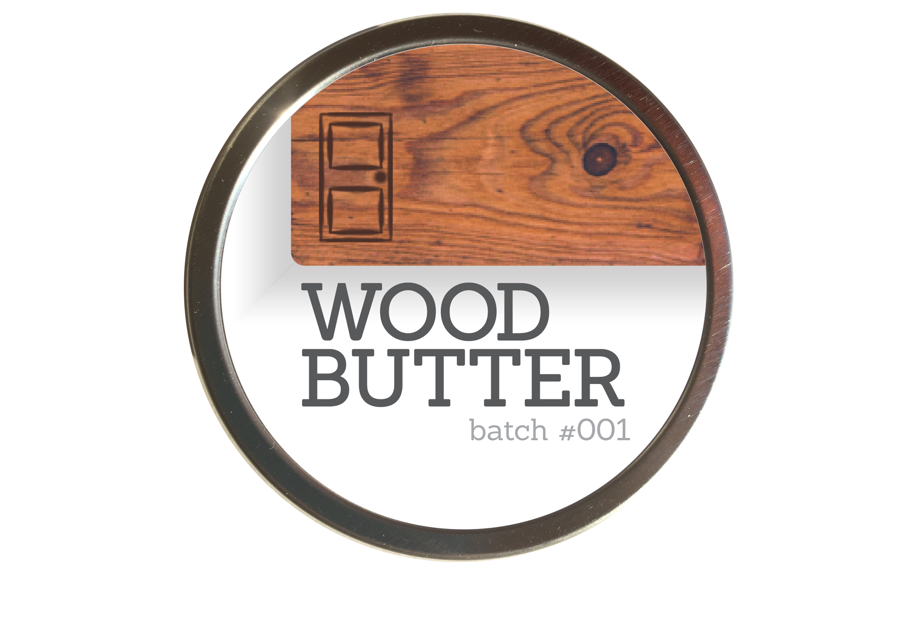

<div class="row">
	<div class="col-md-8">
		
	</div>
	<div class="col-md-4">
		<p><strong>Project Overview: </strong>Random Door Wood Butter is made by a Chicago-based woodworker using beeswax harvested from local urban bees. It is used to protect wood products used with food including cutting boards and butcher block. Find wood butter and other products on the <a href="https://www.etsy.com/shop/RandomDoor" targer="blank">Random Door Etsy site</a>.</p>
	</div>
</div>